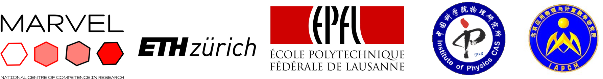

WannierTools¶
WannierTools: an open-source software package for novel topological materials
Source on Github : https://github.com/quanshengwu/wannier_tools.
You can find more useful information on website https://www.wanniertools.org.
Aiming to investigate topological properties, electronic structures and transport properties of
Electron systems (Tested)
Phonon systems (Testing)
Join the QQ group to get support: 709225749
Citation¶
Please cite this paper when using WannierTools for your researchs:
@article{WU2017,
title = "WannierTools : An open-source software package for novel topological materials",
journal = "Computer Physics Communications",
volume = "224",
pages = "405 - 416",
year = "2018",
issn = "0010-4655",
doi = "https://doi.org/10.1016/j.cpc.2017.09.033",
url = "http://www.sciencedirect.com/science/article/pii/S0010465517303442",
author = "QuanSheng Wu and ShengNan Zhang and Hai-Feng Song and Matthias Troyer and Alexey A. Soluyanov",
keywords = "Novel topological materials, Topological number, Surface state, Tight-binding model"
}
Correspondence¶
Please report bugs to wuquansheng at gmail.com.
Licence¶
The WannierTools code is licensed under GPLv3. The licence text in the LICENSE file is included in the root directory of the WannierTools distribution.
{kind=link}
Sponsors¶
This work was sponsored by the following institutes:
{kind=link}